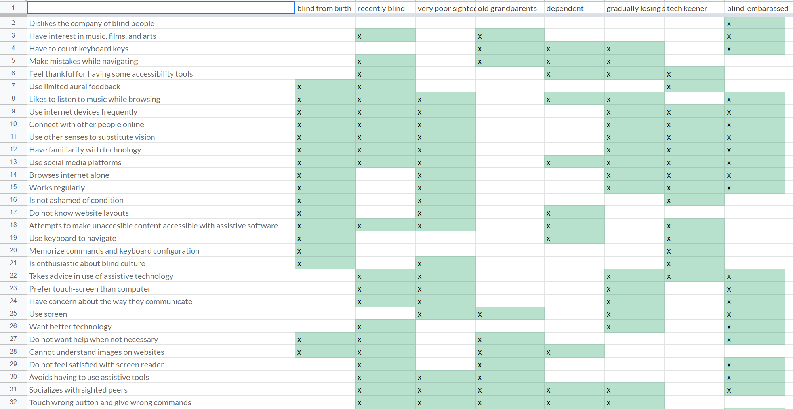
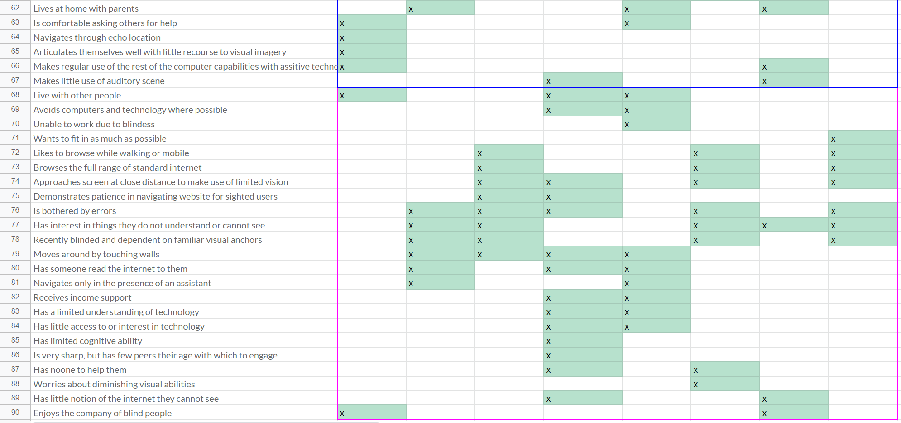
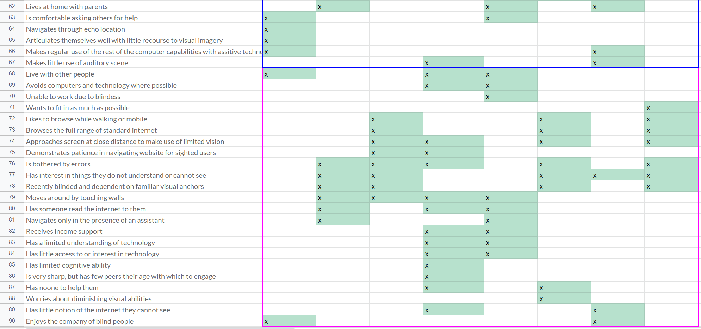
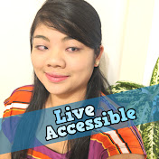
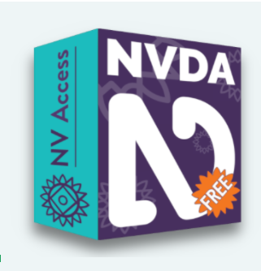
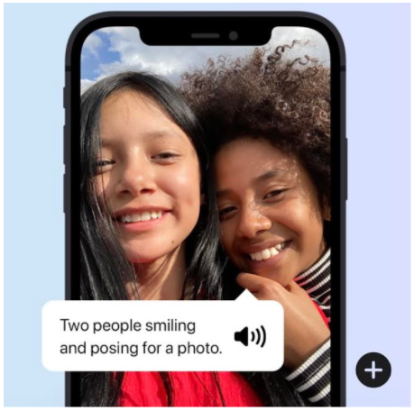

Welcome to ECSE424 HCI Group 13 Notebook
Observations and Proposal
I. Observing Users
In order to get a better sense of the unique characteristics of our potential user base, and to help to find a target audience segment, we begin with observation and an exercise in empathy. To do so, we make detailed empathy maps of four subjects from a variety of backgrounds, based on videos freely available on Youtube. Empathy maps focus observation by forcing the observer to consider not only what the subject says and does, but what they think and feel.
Below are introductions and empathy maps of four sight-diminished subjects discussing and demonstrating how they interact with technology. For each subject we present a brief background setting, followed by an empathy map with a list of observations.

User 1: Partially Blind Redditor
“GrumpyThing” is a longtime Redditor, and active internet user with her own Youtube channel which she updates regularly. She and her father have congenital cataracts that have reduced their vision to between 2% - 5% of the average sighted person. She prefers to use her limited vision to access the internet: she reads the screen closely, keeping her head about 1” from the screen and moving it a great physical distance to scan across the page. She types her response by feel, but prefers to look over what she’s typed to verify that it’s not “gibberish.” She’s not ashamed to refer to her condition as an impediment, and talks regularly about wanting to be able to interact with the internet like a “regular person.” More recently, she uses her Samsung Galaxy S10 cell phone “most of the time” to access the internet. She zooms in very close on the text. She is not afraid to take advice from others or to update the way that she interacts with technology -- for example, someone suggested that she move to black background and white text, which she finds quite helpful. She uses limited-to-no aural feedback to help her browse.

User 2: Totally Blind Internet Browsing User
“Mike” is totally blind, a natural Russian speaker who now lives in Hanover, though he communicates in this video in English. He navigates the internet with an assistive software called NVDA, a screen reader. Throughout the video he is often lost in webpages, getting errors and warning messages about being on the “last element,” or “unnamed element.” Often he bemoans poor alt-text and overly graphical webpages, which have poor “accessibility” features. Like GrumpyThing, he is not afraid to refer to his condition as a kind of handicap, or suggest that he needs accessibility software. He accepts help from a friend, Jason, who helps him to film the video. Mike is very detail oriented, and seems to enjoy describing how to use his system in great detail. He seems to have little trouble with all the minutiae of the command interface, which appears to be rather complex (using an entire keyboard). This attention to detail is reflected in his obsession with Music Charts (dates and figures), which he discusses in the video as an example use-case for browsing. He does not use a mouse, instead relying entirely on the aural feedback from the system. Throughout the video, he moves his head to help orient himself to the sounds of his speakers. Mike appears to live with his parents, though he looks a little older than most who still live at home.

User 3: Blind From Birth Technologist
“Molly” became blind because of Retinitis Pigmentosa at just 4 years old and began public speaking at age 5. She is an American girl who lives in Los Angeles. She started training when her doctor told her that she had a huge possibility to become blind. So compared to those who have been non-sighted from birth, she knew more about how to use different technologies, and she memorized the keyboard well. Throughout the video, she moves her fingers around her iPhone to let the VoiceOver help her navigate different apps and read mails for her. Although VoiceOver supports her well, she still touches some buttons accidentally and can not go directly to the place she wants.

User 4: Blind Film Director and Instagram User
:“James” is a born blind film director. He moved to Los Angeles and researched in the area of independence and accessibility for blind people. He interviewed the CEO of Apple and he directed a multi-year commercial film for Tommy Hilfiger. He had a lot of words to say about image descriptors. Throughout the video, he seems not satisfied with the screen reader in the market and he believes the reader can be better. He also points out the image descriptor of Instagram is useless which could not help blind people to understand what the image is about. He is looking forward to a better image descriptor that shows every detail of the image or provides a story for the image in a few sentences.
II. Identifying the Problem
Being blind comes with a lot of constraints on its own. Additionally, technological devices used in our daily lives are often not designed to accommodate the visually impaired. This includes personal computers and smartphone devices. With the help of special accessibility software, blind people can still interact with a computer and navigate the internet. However, these too are not perfect, and they restrict the amount of information the users can gain from websites, making the experience of browsing the internet often frustrating.
An article published in the International Journal of Human-Computer Interaction in 2007 [1] identified several causes of frustration among blind people when interacting with computers. These include confusing page layouts, bad screen-reader feedback, conflicts between screen-readers and applications, wrong image annotations, poorly designed forms, misleading links, etc. World Wide Web Consortium (W3C) has guidelines to guide web developers and instruct them about accessibility, but still, very few designers follow these guidelines [2]. Screen-readers and website designs have evolved since the 2007 article, but many frustrations continue nowadays, as seen in the Observations section.
One of the problems identified by observing and listening to visually impaired users is how web page components are placed on the screen. A regular sighted person can quickly identify objects on a computer screen and map website functions to screen positions. For example, the closing button on a browser is typically red and located on one of the top corners of the webpage. In contrast, a visually impaired person cannot easily map these functionalities to colors or locations. One of the viable solutions to this problem should allow blind users to identify objects spatially on a web page via audio feedback.
III. Developing Personas and the Mental Models Chart
Bridge sentences
Step 1: List Distinguishing Behaviours
The first step is to list all user behaviors of the non-sighted society subgroup. See the following table.
 |
 |
Step 2: Group By Behavior
For behaviors that fall into similar task-based categories, we group them together and identify which segments of the non-sighted group would exhibit these behaviors. See the following tables.



 

Step 3: Name the Groups
After step 2 and this step, we can eliminate some behaviors maybe max should write this part.


Bridge sentences
The tech savvy cultural enthusiast. This person is quite comfortable with their limited vision. They enjoy using it as an opportunity to constantly seek out new technologies that offer new ways to interact with the world. They are open to using synaesthetic substitutions for sight. They browse the internet frequently, either alone or in company, and make extensive use of assistive software, which they enjoy learning. However, they are always looking for the newest assistive feature. They appreciate error notifications from the software, telling them that they’re trying to move past the edge of a page, for example. The tech savvy enthusiast has interests in great detail, minutiae, and likes to use the internet as a source of information. They browse most internet content, but tend towards text-based sites -- not because they are frustrated with not being able to see images and GUIs, but because images do not interest them.The “passer.” This person has an internalized notion of “normal” and is often talking about wanting to do things like “normal” (presumedly, sighted) people. They are not ashamed to talk about their vision-loss, but often gripe about the lack of accessibility for many mainstream websites. They tend to orient towards visual-heavy content, though this can be a source of frustration. These users have limited, but some vision, and prefer to use the visual modality for information wherever possible. They magnify screens and read at very close distance; they prefer to use their cell-phones rather than a dedicated station with assistive software/hardware. When using assistive software (which is very rare), they are frustrated with having to learn how to operate it. They are often hoping for better technology to come along, which can help to bring a “normal”(what they see as normal) experience of the internet to them. They are very creative, and are active in internet communities; either by moderating on online forums, or creating content on YouTube.
The text-oriented navigator. This person enjoys accessing a limited, text-based part of the internet. Perhaps blind from birth, they were introduced at an early age to one particular screen-reading software. They know how to use this software very well, and are reluctant to move to a new technology, even if the state of the art has improved in the years since they were introduced to their assistive software of choice. When their navigation points them towards visuals-heavy websites, they feel frustrated. This kind of user is highly dependent on literal verbal feedback; they prefer to have concrete instructions from a screen reader rather than an abstract representation (they would not prefer an aural icon, for example).
The in-transition. This person is losing their sight and adjusting to life with limited vision. They are generally young, but can also be middle-aged; but marked by a transition point in their life. At this stage, they are less interested in learning assistive technologies, and more interested in using their existing tools to cope with a limited vision (e.g., by zooming in close on screens, both physically and digitally). They are greatly interested in visual things, which can be a source of frustration. When software reports back error notifications (e.g., you are trying to scroll past the edge of a page, you have entered a URL that cannot be reached (due to a typo)) they are quite frustrated. They browse the full extant of the normative internet, but are not yet convinced that assistive technology is necessary.
The elderly dependent. This person has lived a sighted life, and in their final years is not interested in learning new technology. They rely on the help of others to navigate the internet; often having others read screens to them. They will likewise dictate content to a helper who will then type for them. They are quite sharp and would like more intellectual stimulation, but are reluctant to interact with the internet in any way that requires new learning. Any assistive technology they use would have to be completely transparent and require little training, for example being based in natural language.
Step 4: Personas

Age:25 Gender: Male James is a tech-savvy cultural lover, legally blind film director, accessibility advocate, and speaker. He has never been defeated by his poor eyesight. Instead, he uses all different technologies to support his daily life. With the help of skills, he likes hiking, horse riding, games, and steering boats. He became an accessibility consultant in the fields of games, movies, and technology. He wants new technology to support him to surf the internet quickly and get all the information he wants. He is not interested in the way the picture looks. Instead, he hopes that all images have detailed descriptions so that he can listen to them to understand.

Age: 27 Gender: Female Carrie is the “passer”. She posts a lot of videos on YouTube about live accessibility. Her mission is to share resources, information, and tools that can help others live accessible, regardless of blindness or low vision. She wants new technologies to help the blind community to live like “normal”. She is willing to talk about herself and tell everyone else that she is legally blind to support and encourage all other blind people. Although she has introduced many technologies in her videos, she is still willing to have a new technology that is easier to use.
Age: 70 Gender: Female Getty is the text-oriented navigator. She walked with a retractable cane. She read braille and ordered books on tape. She used to have a silver cube that looks like a wireless speaker, and whenever she presses it, the electronic device told her the time. She is only interested in the daily news that could be the only time that she needs the internet. She is afraid of using new technologies. First, she thinks they are hard to learn. Secondly, she is not willing to try something new unless all her friends are using it.
IV. Illustrating a Use Case Scenario
QAQ
V. Finding Related Products
There are different software available for browsing the internet for blind and visually-impaired people. When using personal computers, there are two popular options, NVDA and JAWS. For mobile devices, one of the users' favorites is Apple's VoiceOver.
NVDA
The NVDA software system allows blind and vision-impaired people to access and interact with the internet by providing screen reader technology. It is only available for personal computers with Windows operating systems. However, it is 100% free to download and install and is available in 50+ languages. Its users have described the system as "light," "fast," and "portable." It can be portable on a USB stick and installed on any computer the user has access to. The software is open-source and globally accessible. The fact that it is free has allowed a lot of people to access computers and the internet. Its user base has been steadily growing in the past years, and it is constantly improving. However, users report a series of bugs particular to the browser and specific third-party applications.
JAWS

JAWS is the world's most popular screen reader software. It provides speech and Braille output for various computer applications on personal computers with Windows operating systems, allowing users to navigate with mouse and keystrokes. It is a paid software maintained by Freedom Scientific. A perpetual home license costs 1000 USD, while the next most affordable option is a personal Annual License costing 95 USD/year, valid for U.S. customers only. Once the best choice in the market, JAWS has been losing its popularity since more affordable assistive technology became available. Users report that the system is stable and reliable, but the price factor is very limiting. However, there is good customer support for users, and there are periodic updates to include new application compatibility.
VoiceOver
VoiceOver is an assistive technology developed by Apple and is only available on iOS devices. It consists of a gesture-based screen reader for iPhone and iPad users that cannot see the screen. It provides audible descriptions of what's on the screen, including but not limited to battery level, incoming caller's name, and which app the user's finger is on. Its settings are easily adaptable and adjustable depending on the user's needs, for example, slowing down the reader's voice. In addition, VoiceOver benefits from the touch-screen to give tactile feedback when users are pressing, holding, dragging their fingers on the screen. The system is regularly updated and is made available on each iOS update.
VI. Comparing Products
After conducting interviews with 100 blind users, Lazar et al. [1] found that 2 of the top 10 causes of frustration when using the internet included (a) page layout causing confusing screen reader feedback; and (b) conflict between screen-reader and application. Although evolving software systems are available for screen-reading and screen assistance, users still face problems interacting with unknown websites. They have trouble with the placement of content on web pages. Commonly used screen-readers, such as NVDA and JAWS, are limited on the amount of information the user gains since they depend on pressing a key or dragging a mouse. For example, when visiting a new website, users may get descriptions of images and text. Still, they may not be able to visualize the placement of the website components. VoiceOver does this job better because the user can touch the screen and feel where objects are placed referent to the screen. However, this technology is not available for personal computers, and it is limited to iOS devices. Our project proposes a solution that will allow PC users to quickly identify the placement of components in a website without having to drag a mouse or tap the keyboard. It will incorporate the user’s movement with audio feedback to indicate where objects are located, therefore facilitating the exploration of websites.
VII. Designing at a High Level
QAQ
VIII. Justifying Feasibility
QAQ